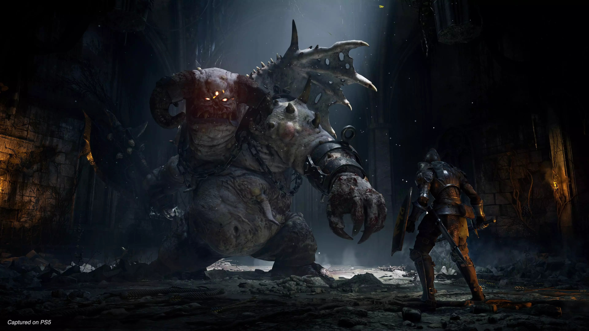

Souls
Fromsofts's first souls game was demon souls. It was a amazing it was not the first game i played it was actually the 3rd i played in the series. Demon souls was a game like no other with very complex gamplay. It is a rpg where you choose a class build there attributes up and defeat boss and conquer areas.
Gameplay

The gameplay for demon souls is very unique it has a constant evolving world with many optional encounters. Very bright to dark landscapes with villages and castles lots of variety and emersions from all the sounds. Demon souls can be very calm and relaxing and then can jump to the most challenging encoutners in vidoe game history.
Fromsofts Gem
Demon souls was a game ahead of its time and not loved by alot of people due to the diffuclty. You see this is a game were there is no easy mode. Looting and collecting powerful gear is what makes you stronger that is how you make the game easier. Also remebering the parry and dodge timing.